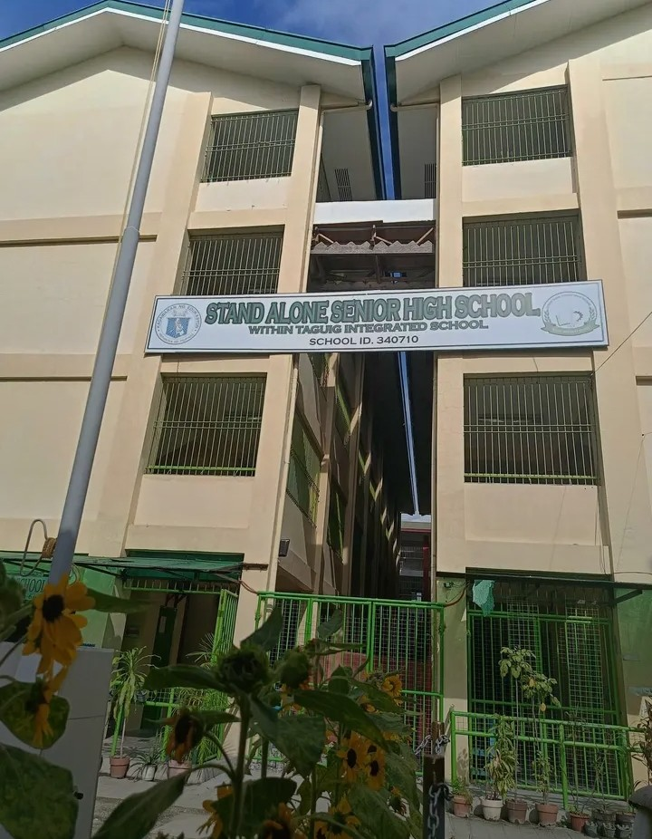
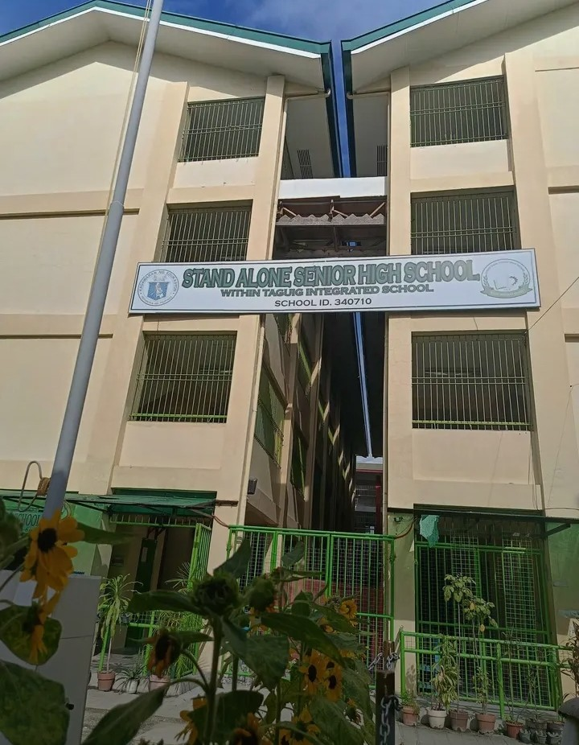

STAND ALONE SENIOR HIGH SCHOOL-TIS
ACTIVITIES
GALLERY
 
<
Stand-Alone Senior High School within Taguig Integrated School is a public secondary institution in Taguig City, Philippines, operating exclusively for Grade (11-12). It is part of Taguig Integrated School (TIS) but functions independently as a stand-alone senior high school.

<
Stand-Alone Senior High School within Taguig Integrated School is a public secondary institution in Taguig City, Philippines, operating exclusively for Grade (11-12). It is part of Taguig Integrated School (TIS) but functions independently as a stand-alone senior high school.
Franz Yuri Ramos
Grade 11 ICT - Industry